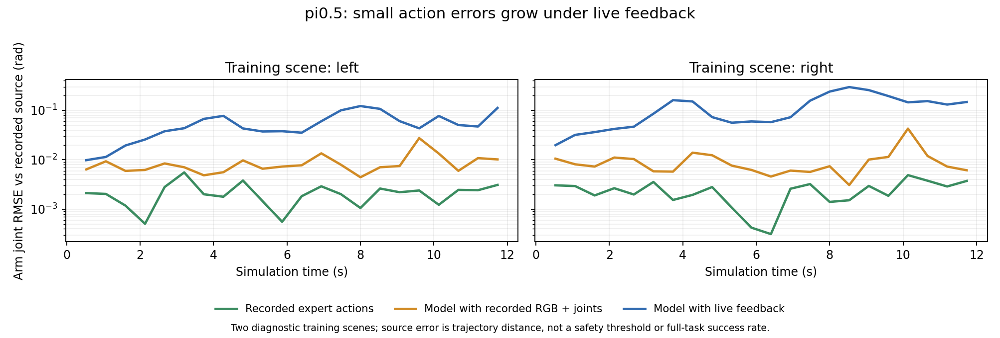

为什么闭环执行会失败？
用同场景的原始视频，拆开看图像输入、关节反馈和动作误差。
30k 权重预测10步 · 执行8步15 Hz观测单环境 Isaac App第三人称相机
01 · ORIGINAL VIDEO
8段原始录像 · 可下载同步查看同场景的两种配置
模型实际收到的全局任务 · pi0.5无Planner子任务切换
验收时间与视频来源
模型实际收到的全局任务 · pi0.5无Planner子任务切换
验收时间与视频来源
显示的是第三人称640×480原始录像。页面上的状态来自原物理验收，不是事后添加的模型指令。通过稳定抓取仍不等于完成倾倒和放回。
02 · CONTROLLED OBSERVATIONS
下载结果 CSV ↗四种输入配置，结果分开统计
| 模型图像输入 | 模型关节输入 | 通过稳定抓取 | 观察时长 | 性质 |
|---|
稳定抓取沿用原接触、抬升、离开垫子及稳定持杯3秒的要求。两例训练关节＋实时图像分别在9.583秒、9.892秒通过。独立启动保留约0.8/255的首帧RGB差异和微米量级杯位置差异；不声称所有仿真浮点状态完全相同。
全部8条诊断录像
点击一行，将该配置放到B侧，并与同场景实时反馈组同步查看。
| 场景 | 配置 | 稳定抓取 | 验收时间 | 仿真时长 | 原视频 |
|---|
小误差为何没有被纠正？
模型使用训练记录的图像和关节时，能输出可执行的抓取动作。使用实时反馈时，关节状态逐渐偏离示教，后续预测进一步偏离，最终没有完成稳定抓取。

纵轴是相对源轨迹的机械臂关节RMSE，不是安全容差。23个预声明采样时刻：示教动作回放约0.002–0.003rad，记录观测模型约0.010–0.012rad，实时反馈模型约0.062–0.138rad。
更直接的关节输入对照
固定训练图像、噪声和模型，首个动作块完全一致。第8帧，左例0.00639rad的关节偏差对应0.01073rad的前8步动作差；右例0.01053rad对应0.01314rad。这是特定扰动方向的响应，不能当作系统稳定性特征值。
训练loss较低为何仍会失败？
训练loss衡量正确历史观测下的条件预测，无法直接反映模型偏离轨迹后的恢复能力。记录关节也提供正确的轨迹进度，因此目前还不能把机制进一步归结为关节读取错误、状态量化或某一种训练覆盖问题。
另一个已确认的抖动来源
训练只监督13个物理关节，内部32维动作的19个填充维没有直接监督。推理时它们自由积分，偏离训练中的解析轨迹，再影响真实关节输出。只约束这19个填充维，24组固定输入对照得到：
| 指标中位数 | 原生采样 | 填充维约束 | 改善组数 |
|---|
目标加速度中位数指标下降约45.6%。但两个原测试场景在约束后仍未通过抓取，不能把这项修正当作完整任务修复。
正式完整任务成绩保持原样
| 执行前缀 | 确认成功 / 总数 | 确认失败 | 未裁定 | 确认成功率 |
|---|
未裁定仍保留在100条分母内，不改记为失败。上面的训练场景干预不计入正式成绩；仅换成单环境后，pi0.5仍为零，因此多环境光照不能单独解释全部失败。
已核对的输入与控制契约
实际训练加载器抽查18个观测，原始图像、13维实测关节、10个区间末端目标及训练/推理确定性预处理一致。全部100条数值与标签指纹和训练记录相同。权重、归一化、关节顺序、弧度绝对目标、动作队列和控制子步均已审计。
这些核对没有证明所有动态RGB/关节时间戳都完全同步。唯一训练层根因、完整任务修复和后续倾倒/放回的物理复现仍需验证。